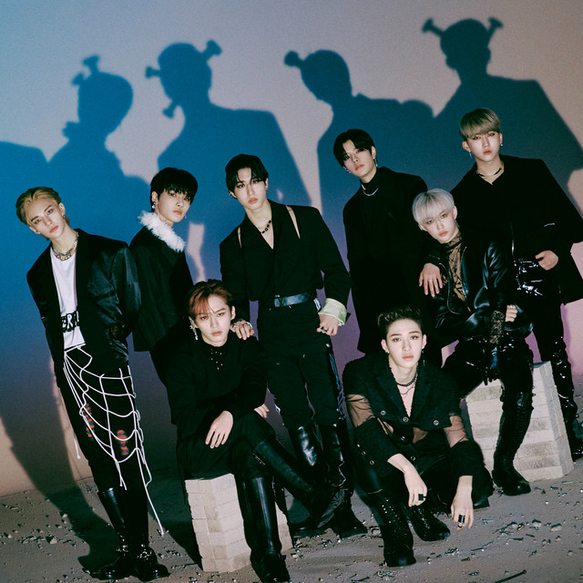
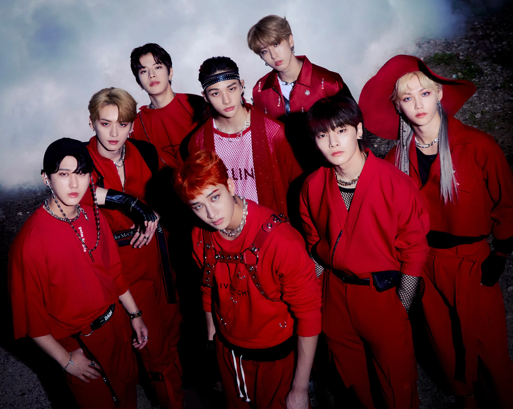

Stray Kids (스트레이 키즈 - abbreviated as "SKZ") is an 8-member, 4th generation South Korean boy group. Created through the 2017 survival program of the same name, Stray Kids debuted under JYP Entertainment on March 25, 2018. Inspired largely by hip-hop and electronica, the group has explored many genres such as EDM, Rock, Lyrical, Rap, Trap and more. With a wildly unique range of concepts to their discography, while also self-producing all their own songs, Stray Kids has created their own sound within kpop, described as being a "mala taste genre" or "noise music". With rising popularity around the world, Stray Kids has become a strong leader in Fourth Generation K-Pop.
The Official Stray Kids Fandom Name is "STAY", and the Stray Kids slogan is: "Stray Kids everywhere all around the world, you make Stray Kids stay".
 
And many more!